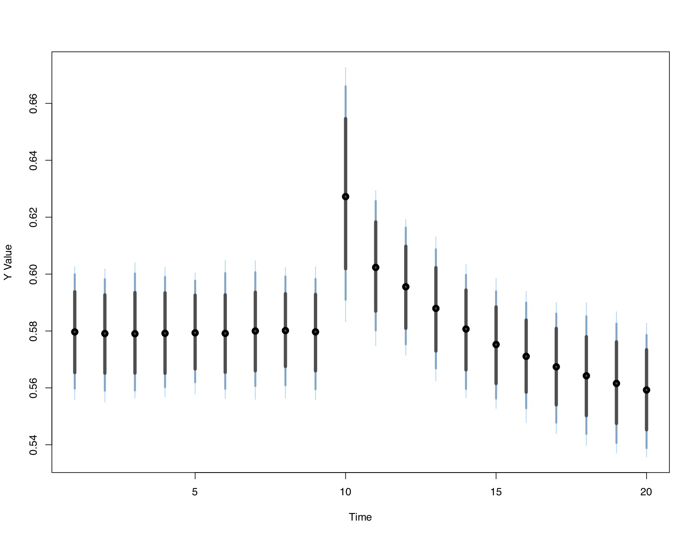

About
dynamac is a suite designed to assist users in modeling and visualizing the effects of autoregressive distributed lag models, as well as testing for cointegration. Below are the corresponding links for the R and Stata programs.
- dynamac for R
- dynamac for Stata
- The hosting Github site can be found here
- You can also reference the corresponding Stata Journal, R Journal, and Journal of Open Source Software articles. 